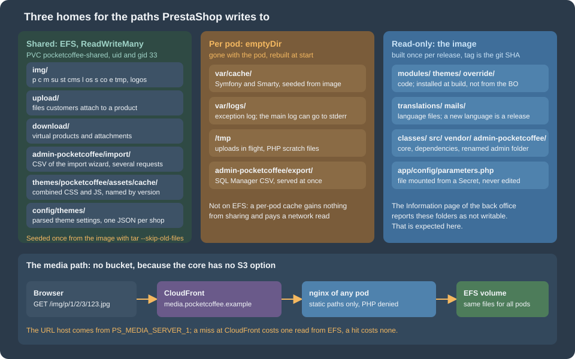

Cloud: Shared Media and Writable Paths
|
This content was generated with the assistance of AI and should be verified against the official documentation before being relied on in production. |
This page was written against PrestaShop 9.2.0 (the source of the tag 9.2.0 was read for every claim about paths, and the
official image prestashop/prestashop:9.2.0-fpm, Debian 12 with PHP 8.5.12, was used to check ownership and the seeding
command), Kubernetes 1.36 and 1.37 on Amazon EKS, the Amazon EFS CSI driver 3.5.3, OpenTofu 1.12 with the AWS provider 6.x and
nginx 1.29, and was checked on 2026-10-29. PrestaShop 8.x was not re-read: the folders are the same ones that the 8.x installer
checks, but the thumbnail and media-server behaviour described below is from 9.2.0. The page names no prices. The listings were
validated with kubeconform -strict, tofu validate, php -l and shellcheck; the nginx configuration was not run, and nothing
was created in an AWS account.
A PrestaShop shop writes files while it runs: product photos and their thumbnails, logos, files that shoppers attach to a
product, downloadable products, caches. On one server they all land on one disk. On a cluster a pod can be replaced at any time and
two pods never share a disk, so every one of those folders has to be given a home on purpose: a volume that all pods share, a
volume that belongs to one pod, or the read-only image. This page makes that decision folder by folder for Pocket Coffee, the
fictitious specialty-coffee shop of this section, moving www.pocketcoffee.example to the cluster pocketcoffee-prod in
eu-west-1. The architecture is in Cloud: Reference Architecture,
the image that carries the code in Cloud: Production Container Image, the
caches and sessions in
Cloud: Cache, Sessions and the Back Office in a Cluster, and
the chart that mounts what is described here in
Cloud: EKS Infrastructure and Helm Deployment. The same
question for WordPress is answered in Media: S3 Offload, EFS and CloudFront;
read that page for the EFS fundamentals, because this one adds only what is specific to PrestaShop.
Three homes for a path

The rule that decides the home is simple. Ask who needs to read the file afterwards.
-
Shared volume. A file that one request writes and a later request, possibly on another pod, reads: an uploaded photo, a thumbnail, a file a customer attached. If a pod writes it to its own disk, the next request lands on a pod that does not have it and the shop shows a broken image or a missing download.
-
Per-pod volume. A file that only the pod that wrote it reads, and that can be rebuilt: the compiled templates, the Symfony container, a log, a scratch file. Sharing these buys nothing and costs a network round trip on every read.
-
Read-only image. Code, translations, mail templates, the renamed admin folder: everything that changes only when you release. The shop does not write there. This is the basis of a stateless pod, and it is the reason that installing modules and themes from the back office is not done in production (the rationale is on the cache and back-office page linked above).
The fourth home is the database, which already holds most of the shop’s state; see the state table in the reference architecture page.
The writable paths of PrestaShop 9.2.0
How the list was derived
Three sources were read, and they agree.
-
The installer and the back-office Information page check a fixed list of folders for write access. In the source it is
ConfigurationTest::getDefaultTests()(classes/ConfigurationTest.php), used by the installer insrc/PrestaShopBundle/Install/System.phpand by the Information page insrc/Adapter/Requirement/CheckRequirements.php:var/cache,var/logs,img(recursively),modules(recursively),themes/<theme>/lang,themes/<theme>/pdf/lang,themes/<theme>/cache,translations,upload,download,app/config,configandmails. The installation page lists the same set from the documentation. -
The path constants in
config/defines.inc.php:_PS_IMG_DIR_and its children (_PS_PRODUCT_IMG_DIR_isimg/p/, and there are one each for categories, manufacturers, suppliers, stores, employees, languages, order states, carriers, genders, profiles andimg/tmp/),_PS_UPLOAD_DIR_,_PS_DOWNLOAD_DIR_,_PS_TRANSLATIONS_DIR_,_PS_MAIL_DIR_,_PS_CACHE_DIR_(var/cache/<env>/) and the log directory of the kernel (var/logs,app/AppKernel.php). -
A search of
classes/andsrc/for the code that writes under each constant, which found the entries the first two sources do not list: the back-office import folder, the combined theme assets, and the theme settings underconfig/themes/.
The first list says what PrestaShop wants to be writable, not what it writes while a shop is running. Many of those folders are only written when somebody installs a module, a language or a theme. The table separates the two.
The decision, path by path
| Path | What writes it, and when | Home on the cluster |
|---|---|---|
|
Product photos. The back office writes the original and its thumbnails when you add a photo. The front office also writes: for every
image on every page, |
Shared (EFS) |
|
Category, manufacturer, supplier and store images, uploaded in the back office, with thumbnails generated like the product ones.
A category cover keeps its name when it is replaced ( |
Shared (EFS) |
|
Language flags, order-state icons, carrier logos, attribute textures, employee avatars and the rest of the small image folders. Written from the back office; rarely. |
Shared (EFS), inside |
|
Scratch space for uploads ( |
Shared (EFS). The page that creates a list thumbnail and the request for it can reach different pods. |
|
Shop logos ( |
Shared (EFS), seeded from the image |
|
The files that shoppers attach to a customizable product, and the attachments of customer messages. Written by the front office, that is by any pod. Customers and the back office read them through a PHP controller, not by URL. |
Shared (EFS). Never served by the CDN. |
|
The files of virtual products and product attachments, written by the back office under a generated name and read by the front office when a customer downloads them. |
Shared (EFS). Never served by the CDN. |
|
The CSV file of the import wizard (Advanced Parameters > Import). The wizard is several requests: upload, mapping, then the
import steps, which read the file again ( |
Shared (EFS) |
|
The CSV files that the SQL Manager writes ( |
Per pod (emptyDir). If a module you add writes there and sends the file in a later request, move it to the shared volume. |
|
The combined and minified CSS and JS files of CCC ( |
Shared (EFS). Otherwise a page built on one pod links to a file that another pod has not generated yet. |
|
The parsed settings of the theme, written when the theme is first read ( |
Shared (EFS). Small, but a theme change made on one pod would otherwise be invisible on the others. |
|
Checked by the Information page and emptied by the cache-clearing code ( |
Per pod (emptyDir) if you want the Information page to pass, otherwise the image. |
|
The compiled Symfony container, the compiled Smarty templates and Smarty cache, translation catalogues, the HTML purifier cache, the class index. Rebuilt from the code. |
Per pod (emptyDir), built by the |
|
The Symfony log, written to |
Per pod (emptyDir). Send the Symfony log to the container’s standard error with |
|
Exists in the tree; no code of |
Not mounted. Where PHP sessions go is decided on the cache and sessions page. |
|
A legacy folder, marked deprecated since PrestaShop 1.7 ( |
The image. |
|
Written by the installer, and rewritten when the Caching panel of the back office is saved
( |
The image. The file is part of it and only reads the environment (see the Helm page); it is read-only, so the Caching panel cannot be used. Set |
|
Written when a language is installed or its mail templates are regenerated ( |
The image. Adding a language is a release. |
|
Written when a module or theme is installed, upgraded or removed, and when a module installs an override. |
The image. Which files an installed module writes while it runs is not documented; see the next section. |
|
The one-click upgrade module’s working folder. |
Not used on a cluster: an upgrade is a new image, see the releases page. |
Two folders deserve a second look.
img/tmp/ is not temporary in the sense of "private to the request". The back-office lists show a small thumbnail of each
product. ImageManager::thumbnail() creates it in img/tmp/ and returns an <img> tag whose URL points at that file. On one server
the file is there when the browser asks for it. On a cluster the pod that built the list page and the pod that serves the image
are not necessarily the same, and a per-pod img/tmp/ gives a grid full of broken thumbnails. It stays on the shared volume with the rest of img/.
The combined assets are named after a version in the database. CccReducer builds the file name from the list of source files
and PS_CCCCSS_VERSION or PS_CCCJS_VERSION, and writes the file only if it does not exist. The version is a database value that
every pod shares, so every pod links to the same file name; the file itself must therefore also be shared, or generated by every
pod before it receives traffic. Clearing the cache in the back office deletes the files and increments the versions
(Media::clearCache()), which is consistent on a shared folder and breaks the next page views on a per-pod one.
Finding out what your modules write
The core list above is complete for the core. A module can write anywhere in the tree, and 9.2.0 does not document where. A shop with a read-only root file system finds out the hard way, so find out before. Run the shop for a test session on a pod whose root is writable, use every module feature that creates a file (exports, generated PDFs, caches, uploads), and list what changed outside the volumes you already know:
#!/usr/bin/env bash
# Lists files written into the container's own layer in the last two hours.
# -xdev skips every mounted volume (EFS, emptyDir), so only unmanaged writes remain.
set -euo pipefail
namespace=pocketcoffee
pod=$(kubectl -n "$namespace" get pods -l app.kubernetes.io/component=web -o name | head -n 1)
kubectl -n "$namespace" exec "$pod" -c php-fpm -- \
find /var/www/html -xdev -type f -mmin -120 -not -path '*/var/cache/*'Every path the command prints is a decision to make: ship it in the image (if it is a cache that is rebuilt cheaply), mount a volume on it (shared if another pod must read it), or fix the module. Do the exercise once per module release, not once per shop, and keep the result next to the module’s code.
A shared volume on Amazon EFS
Amazon EFS is the shared volume of the Pocket Coffee cluster for the same reasons as in the WordPress pages: it is a managed
NFS file system that pods in every Availability Zone mount read-write, and the EFS CSI driver gives Kubernetes a
ReadWriteMany claim for it. The file system, its mount targets in the private subnets and the driver add-on are created with
the rest of the infrastructure (see Cloud: EKS Infrastructure and Helm Deployment).
The EFS service itself is in Block and File Storage, the volume concepts in
Persistent Volumes and StorageClasses, and the driver add-on
in EKS Clusters. What follows is specific to the shop.
One access point, user 33
PHP-FPM and nginx in the official image run as www-data, user and group 33 (checked in the image with id www-data). An
EFS access point forces a POSIX identity on every operation that goes through it, whatever user the pod runs as, so one access
point with user and group 33 gives the shop the ownership it expects without a chown init container. The access point also fixes
the root directory, so the shop sees only its own subtree.
# media.tf: the access point of the shop volume and the CloudFront distribution of the media host.
variable "efs_file_system_id" {
description = "ID of the EFS file system created by the infrastructure module."
type = string
}
variable "media_certificate_arn" {
description = "ACM certificate for media.pocketcoffee.example, issued in us-east-1."
type = string
}
variable "route53_zone_id" {
description = "Hosted zone of pocketcoffee.example."
type = string
}
variable "media_origin_domain" {
description = "Name that resolves to the load balancer and routes to the web Service."
type = string
default = "media-origin.pocketcoffee.example"
}
resource "aws_efs_access_point" "shared" {
file_system_id = var.efs_file_system_id
posix_user {
uid = 33
gid = 33
}
root_directory {
path = "/pocketcoffee/shared"
creation_info {
owner_uid = 33
owner_gid = 33
permissions = "0775"
}
}
tags = {
Name = "pocketcoffee-shared"
}
}
resource "aws_cloudfront_cache_policy" "media" {
name = "pocketcoffee-media"
comment = "Static files of the shop; no cookies or headers reach the origin."
min_ttl = 0
default_ttl = 86400
max_ttl = 31536000
parameters_in_cache_key_and_forwarded_to_origin {
enable_accept_encoding_gzip = true
enable_accept_encoding_brotli = true
cookies_config {
cookie_behavior = "none"
}
headers_config {
header_behavior = "none"
}
query_strings_config {
query_string_behavior = "all"
}
}
}
resource "aws_cloudfront_distribution" "media" {
enabled = true
is_ipv6_enabled = true
http_version = "http2and3"
comment = "media.pocketcoffee.example"
aliases = ["media.pocketcoffee.example"]
origin {
domain_name = var.media_origin_domain
origin_id = "pocketcoffee-web"
custom_origin_config {
http_port = 80
https_port = 443
origin_protocol_policy = "https-only"
origin_ssl_protocols = ["TLSv1.2"]
}
}
default_cache_behavior {
target_origin_id = "pocketcoffee-web"
viewer_protocol_policy = "redirect-to-https"
allowed_methods = ["GET", "HEAD"]
cached_methods = ["GET", "HEAD"]
compress = true
cache_policy_id = aws_cloudfront_cache_policy.media.id
}
restrictions {
geo_restriction {
restriction_type = "none"
}
}
viewer_certificate {
acm_certificate_arn = var.media_certificate_arn
ssl_support_method = "sni-only"
minimum_protocol_version = "TLSv1.2_2021"
}
}
resource "aws_route53_record" "media" {
zone_id = var.route53_zone_id
name = "media.pocketcoffee.example"
type = "A"
alias {
name = aws_cloudfront_distribution.media.domain_name
zone_id = aws_cloudfront_distribution.media.hosted_zone_id
evaluate_target_health = false
}
}The access point is created here because the static volume below needs it; with dynamic provisioning the driver creates its own.
The CloudFront half of the file is explained in
CloudFront in front of the media host. The distribution has a record in the
zone of the shop, and its certificate must be in us-east-1, as for every CloudFront distribution (see
CloudFront).
StorageClass and claim
With dynamic provisioning, a StorageClass with provisioningMode: efs-ap makes the driver create an access point for every claim.
The parameters set the same identity as the OpenTofu resource above, and the path is stable so that a recreated claim finds its files:
apiVersion: storage.k8s.io/v1
kind: StorageClass
metadata:
name: efs-pocketcoffee
provisioner: efs.csi.aws.com
parameters:
provisioningMode: efs-ap
fileSystemId: fs-0123456789abcdef0
directoryPerms: "0775"
uid: "33"
gid: "33"
basePath: /pocketcoffee
subPathPattern: ${.PVC.namespace}/${.PVC.name}
ensureUniqueDirectory: "false"
reclaimPolicy: Retain
volumeBindingMode: Immediate
mountOptions:
- tls
---
apiVersion: v1
kind: PersistentVolumeClaim
metadata:
name: pocketcoffee-shared
namespace: pocketcoffee
spec:
accessModes:
- ReadWriteMany
storageClassName: efs-pocketcoffee
resources:
requests:
storage: 100GireclaimPolicy: Retain keeps the volume when the claim is deleted: a mistaken kubectl delete pvc must not remove the
catalog photos. The storage request is a required placeholder, since EFS is elastic and does not enforce it; size it to what
you expect, because it is what people read in kubectl get pvc. The path of the claim is /pocketcoffee/pocketcoffee/pocketcoffee-shared
(base path, namespace, claim name).
If the file system is created outside Kubernetes, or you want to control the access point yourself (the same access point for staging restores, for example), use static provisioning with the access point of the OpenTofu resource above. The volume handle is the file system ID and the access point ID separated by two colons:
apiVersion: v1
kind: PersistentVolume
metadata:
name: pocketcoffee-shared
spec:
capacity:
storage: 100Gi
volumeMode: Filesystem
accessModes:
- ReadWriteMany
persistentVolumeReclaimPolicy: Retain
storageClassName: ""
mountOptions:
- tls
csi:
driver: efs.csi.aws.com
volumeHandle: fs-0123456789abcdef0::fsap-0123456789abcdef0
---
apiVersion: v1
kind: PersistentVolumeClaim
metadata:
name: pocketcoffee-shared
namespace: pocketcoffee
spec:
accessModes:
- ReadWriteMany
storageClassName: ""
volumeName: pocketcoffee-shared
resources:
requests:
storage: 100GiUse one of the two, not both: the claim is called pocketcoffee-shared in each, and the chart value shared.claimName points at it.
The identity is 33 either way. If the pod runs with another user, files written through the volume are still owned by 33
and permission errors do not appear, which is also the symptom to remember when ownership looks wrong inside the pod.
One claim, many mount points
The shop needs six places on the shared volume. One claim with six subPath mounts is simpler than six claims, and it gives
one thing to back up and one thing to restore. Each mount covers one folder of the shop; subPath makes a directory of the
claim appear at that path in the container.
| Directory on the volume | Mounted at (in php-fpm) |
|---|---|
|
|
|
|
|
|
|
|
|
|
|
|
Mounting a volume on a folder hides what the image has there. For upload/ and download/ that is only an index.php and a
.htaccess, but for img/ it is the 366 files of the default shop, and a shop whose img/ is empty has no logo, no
noimageavailable.jpg and no flags. So the volume is seeded before the first pod mounts it.
Seeding the volume
The seeding Job copies the shipped files of the image into the volume without overwriting anything that is already there. It is
safe to run again after every PrestaShop upgrade, which is when new default files may appear. It mounts the claim at /shared, not on img/,
so the image’s own img/ is still visible to copy from, and it creates the directories that the subPath mounts expect:
apiVersion: batch/v1
kind: Job
metadata:
name: pocketcoffee-seed-shared
namespace: pocketcoffee
spec:
backoffLimit: 2
ttlSecondsAfterFinished: 86400
template:
spec:
restartPolicy: Never
securityContext:
runAsNonRoot: true
runAsUser: 33
runAsGroup: 33
containers:
- name: seed
image: 123456789012.dkr.ecr.eu-west-1.amazonaws.com/pocketcoffee/prestashop:<git-sha>
command: ["/bin/sh", "-c"]
args:
- |
set -eu
cd /var/www/html
mkdir -p /shared/img /shared/upload /shared/download /shared/admin-import \
/shared/theme-assets-cache /shared/config-themes
for dir in img upload download; do
tar -C "/var/www/html/$dir" -cf - . \
| tar -C "/shared/$dir" -xf - --skip-old-files --no-same-owner
done
ls -ld /shared/*
securityContext:
allowPrivilegeEscalation: false
readOnlyRootFilesystem: true
volumeMounts:
- name: shared
mountPath: /shared
- name: tmp
mountPath: /tmp
volumes:
- name: shared
persistentVolumeClaim:
claimName: pocketcoffee-shared
- name: tmp
emptyDir: {}Source: Kubernetes documentation: Jobs
The command was checked in the official image: GNU tar 1.34 in the Debian 12 image extracts with --skip-old-files, leaves an
existing logo.png untouched, exits 0 on the second run and creates the missing folders. Its cost depends on the number of
files in the image, not on the size of the volume: 366 files for img/ in the 9.2.0 image, so it takes seconds even when the
volume holds a million photos. cp -n is avoided on purpose, because the exit status of GNU cp --no-clobber for a skipped
file has changed between coreutils releases.
Run it once before the first release goes out, and again whenever a PrestaShop upgrade may add default files to img/. If the shop
was moved from a single server, copy the existing img/, upload/ and download/ into the volume first, as the page on
Cloud: Migrating from a Single Server describes, and run the seeding Job
afterwards: it adds only what is missing. The first installation (the pocketcoffee-install Job) also writes to img/ (the installer copies the demo or
default images and the logos), so that Job mounts the volume the same way and runs after the seeding Job.
The Deployment: volumes and mounts
The pocketcoffee-web Deployment mounts the six directories into php-fpm, and the two that nginx serves into nginx, read-only.
The listing shows the pod’s volumes and mounts; the probes, resources, the nginx configuration and the way nginx obtains the
static files of the release are in the pages on the image and on the chart.
apiVersion: apps/v1
kind: Deployment
metadata:
name: pocketcoffee-web
namespace: pocketcoffee
spec:
replicas: 2
selector:
matchLabels:
app.kubernetes.io/name: pocketcoffee-prestashop
app.kubernetes.io/instance: pocketcoffee
app.kubernetes.io/component: web
template:
metadata:
labels:
app.kubernetes.io/name: pocketcoffee-prestashop
app.kubernetes.io/instance: pocketcoffee
app.kubernetes.io/component: web
spec:
securityContext:
runAsNonRoot: true
runAsUser: 33
runAsGroup: 33
fsGroup: 33
initContainers:
- name: warmup
image: 123456789012.dkr.ecr.eu-west-1.amazonaws.com/pocketcoffee/prestashop:<git-sha>
command: ["sh", "-c"]
args:
- |
set -e
for app in admin front; do
php bin/console cache:warmup --env=prod --app-id="$app"
done
envFrom:
- configMapRef:
name: pocketcoffee-env
- secretRef:
name: pocketcoffee-secrets
env:
- { name: DB_USER, value: ps_app }
- name: DB_PASSWD
valueFrom:
secretKeyRef:
name: pocketcoffee-secrets
key: DB_PASSWORD_APP
securityContext:
allowPrivilegeEscalation: false
readOnlyRootFilesystem: true
volumeMounts:
- { name: var-cache, mountPath: /var/www/html/var/cache }
- { name: var-logs, mountPath: /var/www/html/var/logs }
- { name: tmp, mountPath: /tmp }
containers:
- name: php-fpm
image: 123456789012.dkr.ecr.eu-west-1.amazonaws.com/pocketcoffee/prestashop:<git-sha>
envFrom:
- configMapRef:
name: pocketcoffee-env
- secretRef:
name: pocketcoffee-secrets
env:
- { name: DB_USER, value: ps_app }
- name: DB_PASSWD
valueFrom:
secretKeyRef:
name: pocketcoffee-secrets
key: DB_PASSWORD_APP
securityContext:
allowPrivilegeEscalation: false
readOnlyRootFilesystem: true
volumeMounts:
- { name: shared, mountPath: /var/www/html/img, subPath: img }
- { name: shared, mountPath: /var/www/html/upload, subPath: upload }
- { name: shared, mountPath: /var/www/html/download, subPath: download }
- { name: shared, mountPath: /var/www/html/admin-pocketcoffee/import, subPath: admin-import }
- { name: shared, mountPath: /var/www/html/themes/pocketcoffee/assets/cache, subPath: theme-assets-cache }
- { name: shared, mountPath: /var/www/html/config/themes, subPath: config-themes }
- { name: var-cache, mountPath: /var/www/html/var/cache }
- { name: var-logs, mountPath: /var/www/html/var/logs }
- { name: export, mountPath: /var/www/html/admin-pocketcoffee/export }
- { name: tmp, mountPath: /tmp }
- name: nginx
image: 123456789012.dkr.ecr.eu-west-1.amazonaws.com/pocketcoffee/prestashop:<git-sha>-nginx
securityContext:
allowPrivilegeEscalation: false
volumeMounts:
- { name: shared, mountPath: /var/www/html/img, subPath: img, readOnly: true }
- { name: shared, mountPath: /var/www/html/themes/pocketcoffee/assets/cache, subPath: theme-assets-cache, readOnly: true }
volumes:
- name: shared
persistentVolumeClaim:
claimName: pocketcoffee-shared
- name: var-cache
emptyDir: {}
- name: var-logs
emptyDir:
sizeLimit: 512Mi
- name: export
emptyDir:
sizeLimit: 512Mi
- name: tmp
emptyDir: {}Points in the listing that are easy to get wrong:
-
fsGroupis for the emptyDir volumes. The EFS access point forces the identity 33 whateverfsGroupsays. The emptyDir volumes are owned by root unlessfsGroup: 33makes them group-writable, and PHP (user 33) writes to them. -
The
warmupinit container exists because an emptyDir hides the image’s folder, and because the cache cannot be built into the image. Thevar/cachefolder of the image is empty on purpose: a cache warmed at build time would hold build-time values and none of the live database (see the image page). The init container compiles the cache of each kernel with the pod’s real environment into theemptyDirbefore PHP starts, the same init container as in the chart of the Helm page. -
The configuration is not a mounted file.
app/config/parameters.phpis part of the image and reads the environment, which the pod gets from the ConfigMappocketcoffee-envand the Secretpocketcoffee-secrets(DB_USERandDB_PASSWDare set per workload, aspc.dbEnvdoes in the chart). The listing shows only what concerns the volumes; the full Deployment is on the Helm page. Nothing mounts a Secret over the file, so the file stays read-only and identical in every pod. -
readOnlyRootFilesystem: trueis only possible because every writable folder has a volume. If a module writes somewhere you did not list, PHP gets a "read-only file system" error at the first write: the exercise in the previous section is how you find those places before production does. -
nginx mounts only what it serves, read-only: it never writes. The static files of the code (themes, module assets) come from the image side, as set up on the image page.
-
A
subPathdirectory that does not exist is created by the kubelet, but on a volume that other pods already use it is better created once by the seeding Job, with the right owner, as above.
Every pod must be able to see a file written by any other. The script below writes a marker through the first pod, reads it from
every pod and removes it, the same test as on the WordPress page, pointed at img/:
#!/usr/bin/env bash
# Confirms that img/ is writable on the shared volume and visible from every web pod.
set -euo pipefail
namespace=pocketcoffee
marker="probe-$(date +%s).txt"
pods=$(kubectl -n "$namespace" get pods -l app.kubernetes.io/component=web -o name)
first=$(echo "$pods" | head -n 1)
kubectl -n "$namespace" exec "$first" -c php-fpm -- sh -c "echo ok > /var/www/html/img/tmp/$marker"
for pod in $pods; do
printf '%s: ' "$pod"
kubectl -n "$namespace" exec "$pod" -c php-fpm -- cat "/var/www/html/img/tmp/$marker"
done
kubectl -n "$namespace" exec "$first" -c php-fpm -- rm "/var/www/html/img/tmp/$marker"Thumbnails and EFS performance
What the front office does with an image
In 9.2.0 a product page, a category page and every list render their images through ImageRetriever::getImage()
(src/Adapter/Image/ImageRetriever.php). For every image, every image size that applies to the object (the sizes are the rows
of Design > Image Settings) and every generation format (jpg, and optionally png, webp and avif, from PS_IMAGE_FORMAT),
checkOrGenerateImageType() calls file_exists() on the thumbnail and, if it is missing, resizes the original into place in the
same request. The consequences for a cluster are these.
-
The front office writes to
img/. A pod that serves a customer is allowed to create thumbnails, soimg/is read-write for the front office too, not only for the back office. This is whyimg/is a shared writable volume and not a read-only one served by a CDN origin. -
Each page costs a number of metadata calls. A list of 24 products, each with four applicable sizes and two formats, runs 192
file_exists()calls before it writes a byte of HTML. On a local disk that is invisible. On NFS each one is a network round trip (the NFS client caches attributes for a short time, but a first request after a pod start does not benefit). -
A missing thumbnail is expensive. The first view after a photo is uploaded, or after a new image size is defined, pays for the resize in the customer’s request, and under load several pods can resize the same image at once. This is not wrong (the result is the same file), it is slow.
What to do about it
-
Generate thumbnails ahead of time. Run the regeneration Job described below after a new image size or format is added, and after a bulk import of photos. The request path then finds every file and never resizes.
-
Define only the sizes the theme uses. Each image size is multiplied by the number of images, and by the number of formats, in both disk space and in
file_exists()calls. Remove the sizes that no template or module uses, and turn onwebporavifonly if the theme serves them. -
Use Elastic throughput and General Purpose performance mode on a Regional file system, the current recommendation of AWS (see the EFS section of Block and File Storage). Older guides recommend bursting throughput; a busy shop can exhaust burst credits, and the symptom is slow image reads and slow uploads at the busiest hour.
-
Keep the images off the request path with a CDN. A file that CloudFront already has is not read from EFS at all. This reduces the cost of delivering the file; it does not reduce the
file_exists()calls that happen while PHP builds the HTML, which is why the first two points matter. -
Let nginx cache file metadata for the paths it serves (see the nginx listing below):
open_file_cachesaves thestatof a file that is requested again within a minute. -
Do not put the code or the caches on EFS. A shop on a shared network file system is much slower than the same shop on local disk, which is the reason that
var/cacheand the code stay off it. The same advice is on the WordPress page. -
Mount with the options the EFS documentation recommends and leave the driver’s defaults alone unless you have measured a problem. The
tlsoption of the StorageClass encrypts in transit.
How slow EFS is for a given shop depends on the number of images and the size of the catalog, and was not measured for these pages: measure with your own catalog, comparing the home page and a category list with a warm CDN and with a cold one, before and after a regeneration run.
Source: Amazon EFS: performance
CloudFront in front of the media host
How PrestaShop builds the URL of a static file
PrestaShop can request its static files from other host names than the shop’s. The setting is Advanced Parameters > Performance >
Media servers, three fields named Media server #1, #2 and #3 that are stored as PS_MEDIA_SERVER_1, PS_MEDIA_SERVER_2 and
PS_MEDIA_SERVER_3 in the table ps_configuration. The form is labelled "use only with CCC". The 9.2.0 source shows exactly what it does:
-
config/config.inc.phpdefines the constants_MEDIA_SERVER_1_,_MEDIA_SERVER_2_and_MEDIA_SERVER_3_from the three configuration values, only if they are not already defined. -
Tools::hasMediaServer()counts the non-empty constants, in order: with_1_empty there are none, with_2_empty there is one, and so on.Tools::getMediaServer($path)then returns server numberabs(crc32($path)) % count + 1: the same path always goes to the same server, and with one server every file goes to it. With none, it returns the shop’s own domain. -
The result is a host name (a domain, no protocol, no path). The protocol comes from the request:
Link::getMediaLink()returnsprotocol_content . host . path, andTools::usingSecureMode()readsHTTPS,SSL,REDIRECT_HTTPS,HTTP_SSLand finally the headerX-Forwarded-Proto, so a request that reached the pod through the load balancer withX-Forwarded-Proto: httpsproduceshttps://media URLs. -
The media server is used for the images of products, categories, manufacturers, suppliers and stores (
Link::getImageLink()and the sibling methods), for the theme URLs that templates receive (img_url,css_url,js_url,theme_assets, and the rest of the array assigned inFrontController), for the combined CCC files (CccReducer), for stylesheets and scripts that a module registers withregisterStylesheet()andregisterJavascript()when the matching CCC switch is off, and for the logo of PDF documents (HTMLTemplate). -
The back-office form validates each field with
FILTER_VALIDATE_DOMAINandgethostbyname(): the name must resolve in DNS when you save it. The Apache.htaccessgenerator uses the three values too, and only when all three are set; nginx does not read.htaccess, so that does not apply here.
Source: PrestaShop 9.2.0: classes/Tools.php (getMediaServer, hasMediaServer) and classes/Link.php (getMediaLink)
Pocket Coffee uses a single media host, media.pocketcoffee.example, as Media server #1, and leaves #2 and #3 empty. More than one
host name only helps HTTP/1.1 clients open more connections; behind CloudFront with HTTP/2 or HTTP/3 it adds DNS lookups. The
existing performance page gives the same advice for a CDN.
That page says the setting is honoured only when CCC is off. The code shows a narrower condition: registerStylesheet() and
registerJavascript() check the CCC switch, but the image links, the theme URLs and the CCC files themselves use the media server whatever
the switch says. The practical conclusion is the one to keep: set one host name and test the home page, a product page and
an invoice PDF with the network tab open, and look at which URLs still point at the shop’s own host.
Setting it from the environment
The back-office form is the documented way. It has three drawbacks on a cluster: the name must resolve in DNS at the moment you save
it, the value lives in the database (so a copy of the production database restored for staging serves its images from the
production media host), and it is a manual step. Because config.inc.php defines each constant only if it is not already defined,
and includes config/defines_custom.inc.php first, the constants can be set from the environment instead. This is read from the source and is
not documented in the developer documentation; test it on your version.
<?php
// config/defines_custom.inc.php: included at the top of config/config.inc.php.
// The media host comes from the environment, so a staging copy of the database does not use the production media host.
$pocketCoffeeMediaHost = getenv('PS_MEDIA_HOST');
if (is_string($pocketCoffeeMediaHost) && $pocketCoffeeMediaHost !== '') {
define('_MEDIA_SERVER_1_', $pocketCoffeeMediaHost);
define('_MEDIA_SERVER_2_', '');
define('_MEDIA_SERVER_3_', '');
}Set PS_MEDIA_HOST=media.pocketcoffee.example in the Deployment’s environment. The FPM pool must pass the variable on to PHP (the pool
setting clear_env = no, set on the image page, or an explicit env[PS_MEDIA_HOST] line). If you prefer the database, the
command line sets the same configuration value without the DNS check of the form:
bin/console prestashop:config set PS_MEDIA_SERVER_1 --value=media.pocketcoffee.example --env=prodPS_MEDIA_SERVERS (a flag the form sets to 1) is not read anywhere in classes/ or src/ of 9.2.0, so the three server values are
all that matters. Whichever way you set it, the shop caches nothing about it that survives a restart: the constants are defined on
every request.
The media host in nginx
CloudFront needs an origin that answers for the media host. Pocket Coffee uses the nginx of the web pods: a second server block
that serves static paths only. Anything else answers 404, so the media host can never run PHP, show the back office or serve the private
upload/ and download/ folders. The rewrites for product and category image URLs
are the ones of the Nginx with PHP-FPM configuration; they are
kept in one file, included by both server blocks, because friendly image URLs such as /12-home_default/espresso.jpg are requested on the
media host too.
# Second server block, next to the one of www.pocketcoffee.example.
# image-rewrites.conf holds the product and category image rewrites of the main block.
server {
listen 8080;
server_name media.pocketcoffee.example media-origin.pocketcoffee.example;
root /var/www/html;
open_file_cache max=10000 inactive=60s;
open_file_cache_valid 60s;
open_file_cache_min_uses 1;
open_file_cache_errors on;
include /etc/nginx/snippets/image-rewrites.conf;
# Files that are replaced in place (category covers, favicon) get a shorter lifetime than versioned files.
location ^~ /img/ {
location ~* \.(?:php|phtml|phar|php[0-9])$ { deny all; }
expires 1d;
add_header Cache-Control "public";
try_files $uri =404;
}
# Combined CSS and JS are named after a version number: they never change under the same name.
location ^~ /themes/pocketcoffee/assets/ {
location ~* \.(?:php|tpl|twig|yml)$ { deny all; }
expires 365d;
add_header Cache-Control "public, immutable";
try_files $uri =404;
}
location ^~ /modules/ {
location ~* \.(?:php|tpl|twig|yml|yaml|json|lock|txt|log|xml)$ { deny all; }
expires 7d;
add_header Cache-Control "public";
try_files $uri =404;
}
location ^~ /js/ {
location ~* \.php$ { deny all; }
expires 7d;
add_header Cache-Control "public";
try_files $uri =404;
}
location / {
return 404;
}
}Source: nginx documentation: location
The nested location blocks that deny PHP are needed for the reason given on the WordPress page: a prefix location marked ^~ wins
over a regular-expression location at the same level, so a PHP-deny rule placed beside it would be skipped. The three lifetimes follow
from how the files change:
-
Combined CSS and JS are named from a version number, so a new version is a new URL: a year and
immutableare right. -
Product thumbnails change under a new image id when a photo is replaced, so they are safe for a long time, but category covers are written to
img/c/<id>.jpgin place (CategoryCoverImageUploader) and the favicon keeps its name, so the whole of/img/gets one day, and a change that must be visible at once is followed by an invalidation (below). The shop logos carry the update time in their name (PS_IMG_UPDATE_TIME) and do not need one. -
Module files change with a release: seven days, and every release that changes them invalidates the paths, or uses new file names.
The server listens on 8080 and answers for two names: the public one (so a request that bypasses CloudFront still works while you
test) and media-origin.pocketcoffee.example, the name that the distribution uses as its origin (the media_origin_domain variable above).
The origin name resolves to the load balancer and is routed to the same Service as the shop; how
the route is written is in the chart page. To keep the origin from being used directly, add a secret header that CloudFront
sends (the custom_header block of the origin) and that nginx checks; the AWS pages on CloudFront describe the pattern.
Invalidation
After a deliberate change of a file that keeps its name, invalidate that path:
aws cloudfront create-invalidation \
--distribution-id EDFDVBD6EXAMPLE \
--paths "/img/c/12.jpg" "/img/favicon.ico"Invalidation is the exception: a shop that must run an invalidation after every image change has the wrong cache lifetime on that path.
There is no S3 option in the core
PrestaShop 9.2.0 cannot store its media in Amazon S3 without help. The core has no storage abstraction: the paths above are
plain file system constants (_PS_IMG_DIR_ and the others) used directly with file_exists(), copy(), rename(), unlink() and
move_uploaded_file() all over classes/ and src/, and no setting, driver or hook changes that. Neither the developer
documentation nor the source of the tag has a filesystem adapter, a Flysystem configuration or an S3 setting for images. This is the
main difference from WordPress (offload plugins), WooCommerce (the same plugins) and Magento (a core remote storage driver), and
it is why the PrestaShop walkthrough uses EFS.
There are two ways to get object storage under a shop anyway, and neither was evaluated for these pages.
-
A module from the Addons marketplace or a third party that moves the images to S3. It would hook the image links (the hook
adaptImageLinkruns afterLink::getImageLink()builds a URL) and replace the file operations. Which modules exist, how they work, and whether they cover thumbnails, theupload/anddownload/folders and the back-office thumbnails is not covered here; check each module against the list of paths above. -
A file system view of a bucket, mounted like a volume, such as Amazon S3 Files (see Block and File Storage) or the Mountpoint for Amazon S3 client (see Amazon S3). PrestaShop’s code relies on POSIX behaviour (rename, overwrite in place, directory listings,
file_exists()on many small files): read the unsupported-feature list of the product before using it, and test with a copy of your catalog.
If you stay with EFS, back it up (see the operations page) and consider the CDN described above the thing that keeps most image traffic away from it.
Thumbnails as a Job
prestashop:thumbnails:regenerate (PrestaShop 9.1 and later; see the CLI commands page)
generates the thumbnails of one image domain, or of all of them. Its arguments, read from
src/PrestaShopBundle/Command/RegenerateThumbnailsCommand.php:
-
image, required: one ofall,categories,manufacturers,suppliers,products,stores. -
image-type, optional: the id of one image size (the rows of Design > Image Settings);0or nothing means all sizes. -
--delete(-d): erase the previous thumbnails of those sizes first.
Four facts from ImageThumbnailsRegenerator change how it is run:
-
Without
--deleteit creates only the thumbnails that are missing. It never overwrites an existing file, so it is idempotent, and a run that was interrupted can simply be started again. It will not update a thumbnail whose image size changed in the back office: for that,--deleteis needed. -
With
--deletethe old thumbnails disappear before the new ones exist. On a live shop the front office then generates each missing file on demand, slowly and from many pods at once. Run--deleteonly for one image size and in a quiet period, or accept the cost. -
It stops after 7200 seconds. The class sets
max_execution_timeto 7200 and stops 4 seconds before it with the error "Only part of the images have been regenerated". Rerun it (without--delete): it continues where the files are missing. A very large catalog needs several runs, which is why the Job allows retries. -
It writes to the shared volume, so the Job pod mounts the same claim on the same paths, and needs the database (the image types, the images).
The Job below runs the regeneration for the products, with the image of the release:
apiVersion: batch/v1
kind: Job
metadata:
name: pocketcoffee-thumbnails
namespace: pocketcoffee
spec:
backoffLimit: 3
activeDeadlineSeconds: 28800
ttlSecondsAfterFinished: 86400
template:
spec:
restartPolicy: OnFailure
securityContext:
runAsNonRoot: true
runAsUser: 33
runAsGroup: 33
fsGroup: 33
containers:
- name: console
image: 123456789012.dkr.ecr.eu-west-1.amazonaws.com/pocketcoffee/prestashop:<git-sha>
workingDir: /var/www/html
command: ["php", "-d", "memory_limit=1G", "bin/console", "prestashop:thumbnails:regenerate", "products", "--env=prod"]
envFrom:
- configMapRef:
name: pocketcoffee-env
- secretRef:
name: pocketcoffee-secrets
env:
- { name: DB_USER, value: ps_app }
- name: DB_PASSWD
valueFrom:
secretKeyRef:
name: pocketcoffee-secrets
key: DB_PASSWORD_APP
resources:
requests:
cpu: 500m
memory: 1Gi
limits:
memory: 1536Mi
securityContext:
allowPrivilegeEscalation: false
readOnlyRootFilesystem: true
volumeMounts:
- { name: shared, mountPath: /var/www/html/img, subPath: img }
- { name: var-cache, mountPath: /var/www/html/var/cache }
- { name: var-logs, mountPath: /var/www/html/var/logs }
- { name: tmp, mountPath: /tmp }
volumes:
- name: shared
persistentVolumeClaim:
claimName: pocketcoffee-shared
- name: var-cache
emptyDir: {}
- name: var-logs
emptyDir: {}
- name: tmp
emptyDir: {}The Job gets its own empty var/cache because the command boots the Symfony kernel: it compiles the
container once, which costs a few seconds in a Job that runs for minutes. Run the command after these events and not on a schedule:
a new image size or format, a bulk import of products, a restore of the volume from a backup, and the first load of the catalog of a shop
that was migrated. For a regular catalog update that only adds photos, the front office creates the missing thumbnails on first view
and the CDN keeps them afterwards, so a Job is not needed.
Pitfalls
| Symptom | Cause and fix |
|---|---|
The shop has no logo or default images after the first deployment |
The volume was mounted on |
Thumbnails in the back-office product list are broken, but the front office is fine |
|
The page is unstyled for a few requests after a deployment or after clearing the cache |
|
A theme setting saved in the back office reverts on some requests |
|
|
The pod runs as a user other than 33 and the volume is not behind an access point that forces 33, or an old directory is owned by another
user (a copy made as root). Fix the ownership with a Job that runs |
|
A module writes in a folder that has no volume. List the writes with the command above and decide a home for each. |
Images come out as |
The media-server value is empty in the pod (check |
A category cover or the favicon shows the old file after an update |
The file keeps its name, and CloudFront has the old one. Invalidate the path, or lower the lifetime of |
The |
The media server block has a location for them. Remove it: those folders are served by PHP controllers only. |
The Information page shows red marks on |
Expected: they are read-only on purpose. Do not make them writable to silence the page. |
The Caching panel of the back office cannot be saved |
|